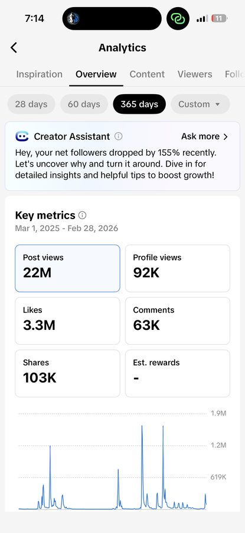

Baylor BBA student — double major in MIS and Sports, Strategy, Sales & Entertainment Marketing. Built audiences from scratch, closed brand deals, analyzed performance data, and led teams across creator, campus, and service roles. Everything below is documented and verifiable.
Social MediaCreator EconomySports BusinessCRM & SalesLeadershipAnalytics
Education
Baylor University.
Business Scholars Honors Program — graduating May 2027 with a double major designed for the intersection of data systems and sports & entertainment marketing.
Baylor University
Bachelor of Business Administration — Business Scholars Honors Program
Double Major: Management Information Systems & Sports, Strategy, Sales & Entertainment Marketing
May 2027Waco, TXHonors Program
National Merit Qualifier · Honors with Distinction · 2× Academic Decathlon State Finalist · 2× UIL One-Act Play State Finalist
3.4GPA
1420SAT · 95th %ile
S3E Program
The Sales Strategy in Sports and Entertainment program prepares students for professional selling, CRM usage, and consumer strategy in the sports and entertainment industry. Direct job placements include the Vegas Golden Knights, San Antonio Spurs, Colorado Avalanche, Dallas Cowboys, Dallas Mavericks, and Curb Records.
Relevant Coursework
Professional SellingSports Data AnalyticsOrg. LeadershipSystems & Analysis DesignMobile App DevelopmentOperations ManagementIntro to PythonFinancial AccountingManagerial AccountingSoftware Applications
Timeline
Professional experience.
The through-line across every role is ownership — content, analytics, performance, and a drive to build polished work rather than stopping at the idea stage.
Creator & Media
Spring 2026
MediaESPN Central Texas
Social Media Marketing — TikTok
Assisted building ESPN CT's social platforms under new management.
Created multiple videos per week as part of a three-person production team.
Attended live broadcasts, studio podcasts, and in-field productions for sports coverage.
Sports MediaTikTok ProductionLive Broadcast
2026 – Present
UniversityBaylor Social Media
Social Media Student Worker
Drove 200K+ views across the first three personally curated videos including on-camera interviews.
Applied trend forecasting while maintaining university brand standards.
Collaborated with departments to capture major campus events and produce social-ready content.
University BrandInstagramTikTok
Jan 2025 – Present
CreatorTikTok UGC

Brand Ambassador & UGC Creator
Drove 1M+ views, increased click-through rate by 58% and conversion rate by 38%.
Collaborated on cross-promotional campaigns to increase revenue and lead generation.
Used descriptive statistics to analyze data, optimize content scheduling, and grow engagement.
UGCConversionsAnalytics
2023 – Present
CreatorInstagram · @j.xjohnson
Content Creator
Grew to 6,100+ followers with 44.5M reel views lifetime.
Reached 15.7M accounts in the last 30 days across organic content.
Builds on-camera presence and audience trust through consistent content.
InstagramReelsGrowth
2023 – Present
CreatorPersonal TT · @NotJax
Creator and Brand Partner
Built 50M+ lifetime views, 22M yearly views, and 18.7K followers on TikTok.
Partnered with Ailith AI, Snow, Gymshark, Recapture Livestream, and Locket.
Generated $15K+ in revenue through brand deals and a three-month livestream campaign.
Creator EconomyBrand DealsRevenue
2025 – Present
SponsoredCreed TT · @jax.prays
UGC Creator and Brand Partner
Helped scale from zero to 14M+ views and 6K followers in 120 days.
Produced 75+ videos per month, including multiple videos above 1M views.
Earned performance bonuses and contributed to growth of the creator team.
SponsoredUGCPerformance
2025 – Present
SponsoredInsight Timer · @jax.relates
UGC Creator and Brand Partner
Generated 150K+ views within the first 30 days of the partnership.
Produced 30 videos as part of a sponsored UGC content campaign.
Earned performance-based compensation tied to content results.
SponsoredUGCPerformance
Campus & Leadership
Oct 2025 – Present
LeadershipBaylor S3E Club
VP of Recruitment & Outreach
Prospected 65 Texas HS DECA programs and contacted 180+ MBA and BBA students.
Attended and designed promotional events for the S3E organization.
Recruited and informed students on club information and career pathways.
RecruitmentSports BusinessOutreach
2026 – Present
LeadershipAI Society
VP of External Relations
Build and manage relationships with companies and executives.
Manage the speaker pipeline from outreach through event coordination.
Secure sponsorships, funding packages, and partnership agreements.
Executive RelationsSponsorshipsAI
Aug – Dec 2025
TeachingPeer Leader Program
🎓
Business Peer Leader & TA
Helped achieve 8.3% higher satisfaction and retention for program students vs. non-participants.
Led weekly sessions for 26 freshmen, guided discussions, and supported their business school transition.
Organized 2-semester meetups and individual check-ins.
TeachingMentorshipLeadership
Sep 2025 – Present
MinistryHighland HS Ministry
✝️
Small Group Leader & Mentor
Assisted in discussion for 20–30 juniors in high school each week on Sunday mornings.
Guided deeper learning discussions for 10–20 high school boys every Wednesday night.
Attended weekend retreats supporting spiritual growth for 100+ high schoolers.
MentorshipLeadershipCommunity
Earlier Experience
Summers 2022–2025
CampSky Ranch Christian Camps
⛺
Day Camp · Work Crew · Senior & Leadership Counselor
Only high schooler on Day Camp team — assisted activities for 200+ campers, 9 hours a day.
1 of 5 selected for Work Crew; amassed 500+ service hours over multiple summers.
Selected as Senior Counselor and Leadership Counselor in consecutive years, demonstrating progression.
Dallas & COCounselorLeadership
Mar – Jul 2023
ServiceHula Hut Hawaiian Restaurant
🌺
Server and Waitstaff
Served 60+ guests per shift; boosted customer satisfaction and repeat visits.
Managed up to 7 tables simultaneously, developing multitasking and time management under pressure.
Trained 3 new team members and streamlined daily operations.
Little Elm, TXCustomer ServiceTeam Training
Aug 2017 – May 2022
RefereePlano Sports Authority
⚽
Soccer Referee and Timekeeper
Worked 2–5 matches per week; promoted to high school center referee at age 16.
Received match requests from multiple coaches — recognized for consistency and professionalism.
Enforced rules, made quick decisions under pressure, communicated effectively with all parties.
Plano, TXOfficiatingDecision-Making
LinkedIn
In the field.
Real-time updates from the work as it happens — partnerships, milestones, and professional moments posted directly to LinkedIn. Add new posts to linkedin-posts.json and they'll appear here automatically.
Loading posts…
Skills
Platforms, tools, and working strengths.
Creative execution paired with practical systems thinking — content, data, CRM, and lightweight product-style building.
A mix of industry credentials, academic competitions, and hands-on system builds from coursework.
HubSpot Social Media Marketing Certification
Training in strategy, content planning, measurement, and campaign optimization across major social platforms.
Salesforce Trailhead — 20,000 pts · 80+ Badges
CRM workflows, digital tools, data management, and marketing cloud fundamentals with emphasis on Salesforce marketing tools relevant to sports & entertainment.
MOS Certification (Microsoft Office Specialist)
Certified proficiency in Microsoft Office suite — Excel, Word, and PowerPoint at a professional standard.
AED / First Aid · Ministry Safe Certified
Holds current AED, CPR, and First Aid certification alongside Ministry Safe certification for working with youth in supervised settings.
SPJST System Proposal and Design
Academic project: full system analysis proposal for SPJST — requirements gathering, process mapping, and solution architecture presented to stakeholders.
Mobile App Development — Corona SDK
Built a functional mobile application using Corona SDK, covering the full development cycle from concept to deployment.
Marketplace Simulation Competition — 2nd Place
Competed in and placed second in a multi-team business strategy simulation assessing market analysis, pricing, and competitive positioning.
Involvements
VP of Recruitment — S3E Club · Baylor Consulting Group · Perplexity Campus Partner · Christian Business Leaders
Let's talk.
Open to marketing, social media, content strategy, sports business, and creator economy roles. Reach out directly — I respond fast.